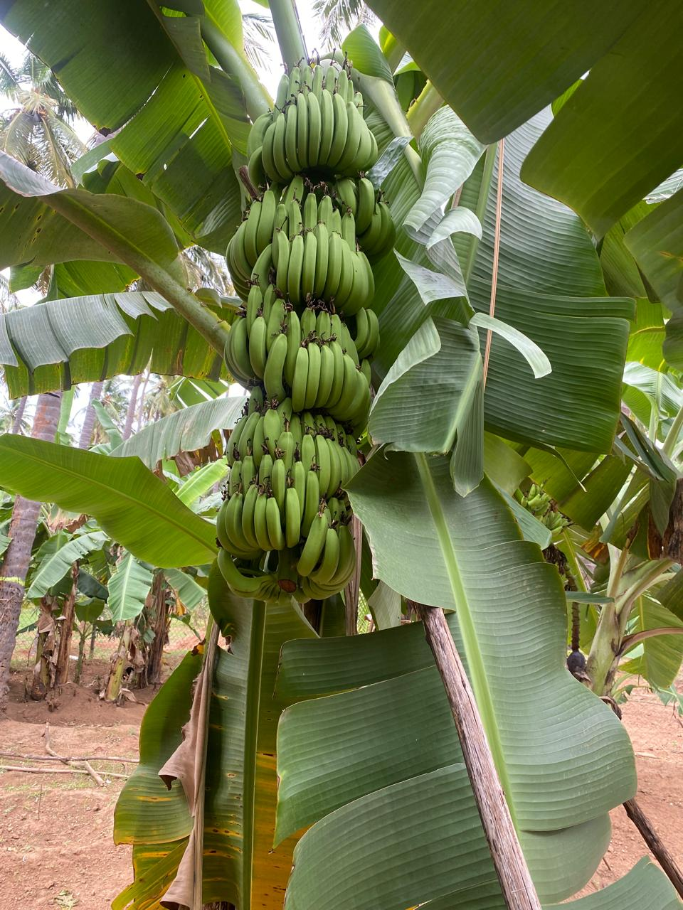
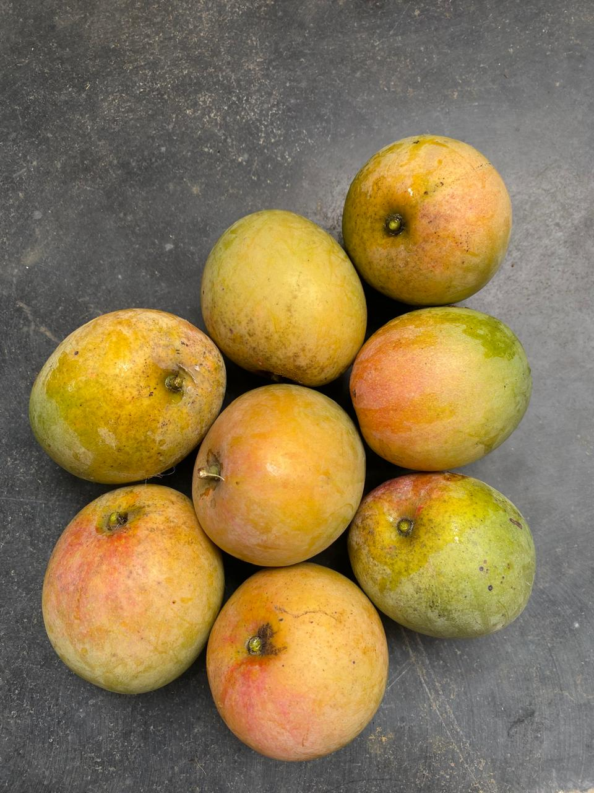
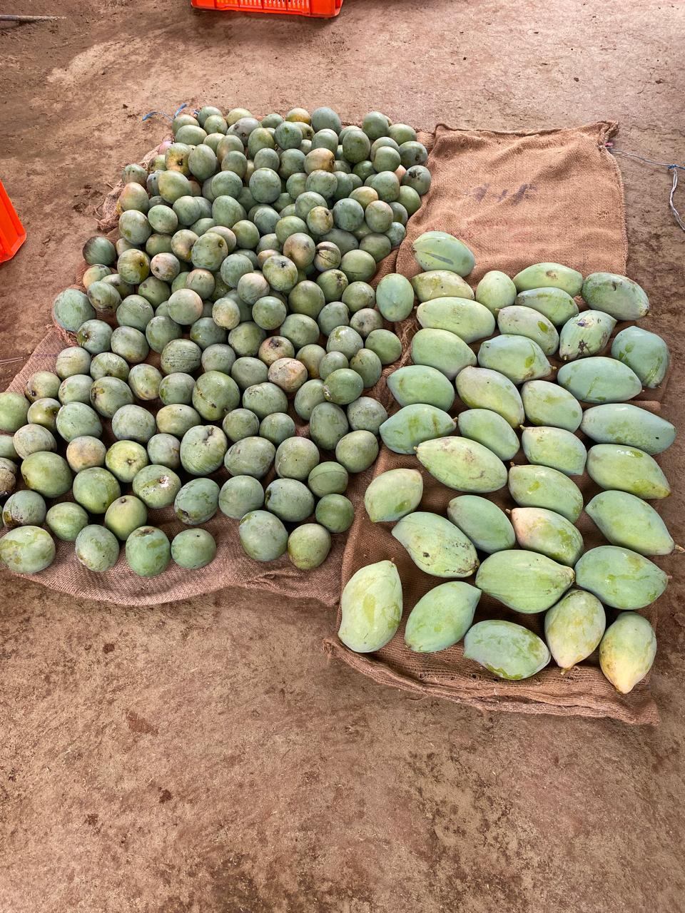

Our Farm Harvest
We cultivate premium organic crops. Explore our chemical-free coconuts, fresh bananas, and local mango varieties.
Coconut Cultivation
Our main agricultural focus is sustainable, pesticide-free coconut farming where we cycle natural nutrients and utilize solar dome drying.
Banana Plantation
Grown naturally using sustainable organic homestead farming.

Banana Plantation
Our banana trees flourish alongside coconut palms, irrigated with clean water and nourished by natural organic compost. We grow delicious, high-quality native bananas without any chemical sprays.
Mango Varieties
The 2 types of Mango we cultivate are Panchavarnam and Kili Mooku.

Panchavarnam
Named after its beautiful five colors, this variety offers a unique sweet flavor with a rich, fibrous texture that is highly cherished in Tamil Nadu.

Kili Mooku
Also known as Totapuri or parrot-beaked mango, it has a distinct curved shape, slightly sour-sweet crunchy taste when raw, and sweet juicy pulp when ripe.
Mango Cultivation
Our step-by-step mango harvest process, documented with original photos and videos directly from Saptur.